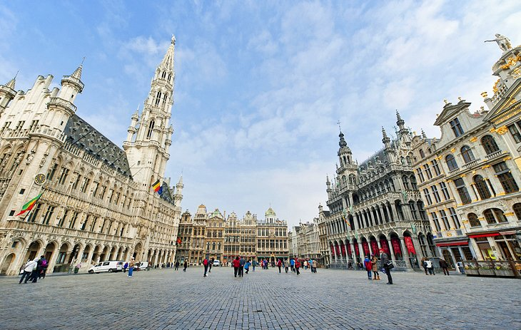
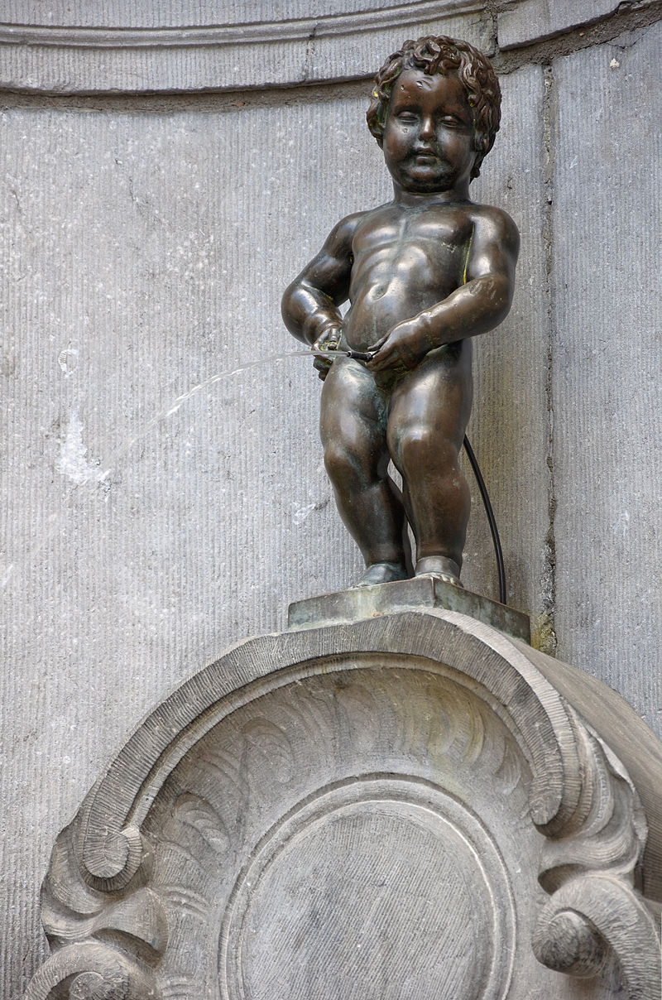

Begin your adventure at the Grand Place before making your way to the equally impressive La Bourse.
Le Grand Place is geographically and commercially the heart of the city, it is a port of call for most visitors to Brussels. The square remains the civic centre and offers the finest surviving example of 17-th century architecture. As early as the 11th century, open-air markets took place on this magnificent site. and by the end of the 15th century, Brussels' town hall, The Hotel de Ville was built. Many city traders also added individual guildhouses. But in 1695, cannon fire by the French destroyed all but the facades of the town hall. Trade guilds were urged to rebuild their halls to styles approved by the Town Council, the Flemish Baroque style which stand today.
In Schuman, visit the Parc du Cinquantenaire, home to many fine attractions . Before you return to the centre of town, have a good look around the Quartier Europeen. And of course walk along the Rue de l'etuve to see the famous icon of the city, the Manneken Pis .
The Parc and Palais du Cinquantenaire were built for the Golden Jubilee celebrations of Belgian Independence in 1880 which were laid out on unused town marshes. Before being converted into museums, large halls on either side of the archway were for trade fairs. They have also been used for horse racing, and to store homing pigeon and during the second world war it served as a place for vegetable growth to feed the people of Brussels.
This is the headquarters of the European Commission, the civil servants of the EU. The most recognizable building is that of the Berlaymont building. Usually, during the day,this region is full of hustle and bustle, but during the weekends, it is almost deserted. What is pleasant though, is the amount of green spaces which includes the Parc du Cinquantenaire, Parc Leopold and the verdant Square Ambiorix.
An unlikely attraction, this tiny bronze statue of a young boy urinating into a fountain is one of the most antique statues that lies in Brussels, as early as 1451. It is said that in the 12 th century, the son of a duke was caught urinating against a tree in the midst of a battle and this was commemorated in bronze as a symbol of military courage.
